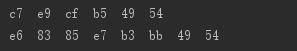

一个汉字占几个字节是不是不太好记呢，编码不一样则占字节位就不一样。下面用一段简短的代码了解一下一个汉字占几个字节。
String s = "情系IT";
try {
byte[] bytes1 = s.getBytes("gbk");
for (byte b : bytes1) {
System.out.print(Integer.toHexString(b & 0xff)+" ");
}
System.out.println();
byte[] bytes2 = s.getBytes("utf-8");
for (byte b : bytes2) {
System.out.print(Integer.toHexString(b & 0xff)+" ");
}
} catch (UnsupportedEncodingException e) {
// TODO Auto-generated catch block
e.printStackTrace();
}下面是运行结果：

根据结果我们可看出，
字符串是utf-8编码，一个汉字三个字节，一个字母一个字节。
字符串是gbk编码时，一个汉字两个字节，一个字母一个字节。
如果想看其他编码下的情况，可复制上面的代码，将字符串进行其他编码查看即可。
注意：如果字符串不进行编码，则默认为项目的编码。
如果文章对您有帮助，请记得点赞关注哟~
欢迎大家关注我的公众号：情系IT，每日推送技术文章供大家学习参考。